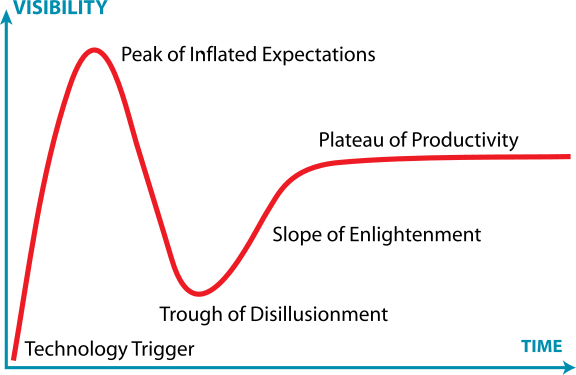
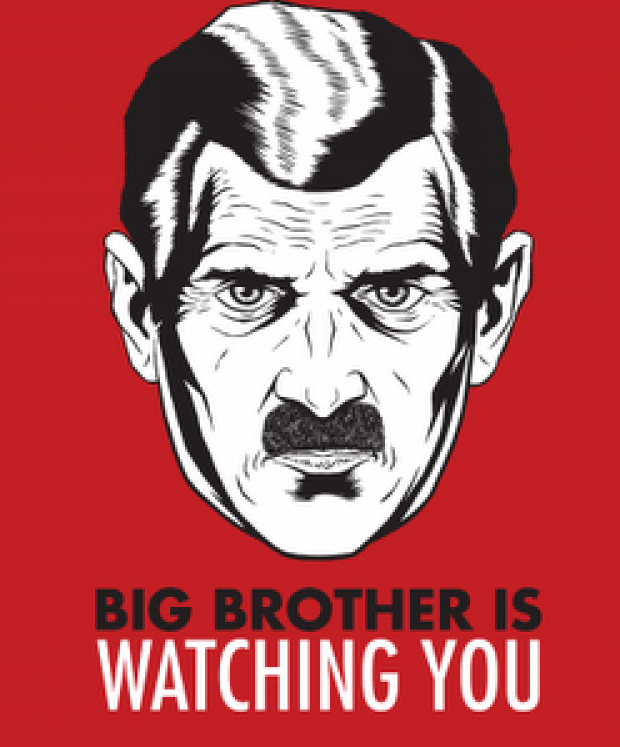

The Gartner Hype Cycle tries to assess where an idea is in terms of maturity and adoption. It splits the evolution of technology into a technological trigger, a peak of expectations followed by a trough of disillusionment and a final ascension into a useful technology. It looks rather like a classical control response to a final set point.
Google trends gives us insight into how far along various technological terms are on the hype cycle.
There are three types of lies: lies, damned lies and statistics
Benjamin Disraeli 1804-1881
The quote lies, damned lies and statistics was credited to Benjamin Disraeli by Mark Twain in his autobiography. It characterizes the idea that statistic can be made to prove anything. But Disraeli died in 1881 and Mark Twain died in 1910. The important breakthrough in overcoming our tendency to overinterpet data came with the formalization of the field through the development of mathematical statistics.

Karl Pearson (1857-1936), Ronald Fisher (1890-1962) and others considered the question of what conclusions can truly be drawn from data. Their mathematical studies act as a restraint on our tendency to over-interpret and see patterns where there are none. They introduced concepts such as randomized control trials that form a mainstay of the our decision making today, from government, to clinicians to large scale A/B testing that determines the nature of the web interfaces we interact with on social media and shopping.
Today the statement "There are three types of lies: lies, damned lies and 'big data'" may be more apt. We are revisiting many of the mistakes made in interpreting data from the 19th century. Big data is laid down by happenstance, rather than actively collected with a particular question in mind. That means it needs to be treated with care when conclusions are being drawn. For data science to succede it needs the same form of rigour that Pearson and Fisher brought to statistics, a "mathematical data science" is needed.
What is machine learning? At its most basic level machine learning is a combination of
\[\text{data} + \text{model} \xrightarrow{\text{compute}} \text{prediction}\]
where data is our observations. They can be actively or passively acquired (meta-data). The model contains our assumptions, based on previous experience. That experience can be other data, it can come from transfer learning, or it can merely be our beliefs about the regularities of the universe. In humans our models include our inductive biases. The prediction is an action to be taken or a categorization or a quality score. The reason that machine learning has become a mainstay of artificial intelligence is the importance of predictions in artificial intelligence. The data and the model are combined through computation.
In practice we normally perform machine learning using two functions. To combine data with a model we typically make use of:
a prediction function a function which is used to make the predictions. It includes our beliefs about the regularities of the universe, our assumptions about how the world works, e.g. smoothness, spatial similarities, temporal similarities.
an objective function a function which defines the cost of misprediction. Typically it includes knowledge about the world's generating processes (probabilistic objectives) or the costs we pay for mispredictions (empiricial risk minimization).
The combination of data and model through the prediction function and the objectie function leads to a learning algorithm. The class of prediction functions and objective functions we can make use of is restricted by the algorithms they lead to. If the prediction function or the objective function are too complex, then it can be difficult to find an appropriate learning algorithm. Much of the acdemic field of machine learning is the quest for new learning algorithms that allow us to bring different types of models and data together.
A useful reference for state of the art in machine learning is the UK Royal Society Report, Machine Learning: Power and Promise of Computers that Learn by Example.
You can also check my blog post on "What is Machine Learning?"
Machine learning technologies have been the driver of two related, but distinct disciplines. The first is data science. Data science is an emerging field that arises from the fact that we now collect so much data by happenstance, rather than by experimental design. Classical statistics is the science of drawing conclusions from data, and to do so statistical experiments are carefully designed. In the modern era we collect so much data that there's a desire to draw inferences directly from the data.
As well as machine learning, the field of data science draws from statistics, cloud computing, data storage (e.g. streaming data), visualization and data mining.
In contrast, artificial intelligence technologies typically focus on emulating some form of human behaviour, such as understanding an image, or some speech, or translating text from one form to another. The recent advances in artifcial intelligence have come from machine learning providing the automation. But in contrast to data science, in artifcial intelligence the data is normally collected with the specific task in mind. In this sense it has strong relations to classical statistics.
Classically artificial intelligence worried more about logic and planning and focussed less on data driven decision making. Modern machine learning owes more to the field of Cybernetics (Wiener, 1948) than artificial intelligence. Related fields include robotics, speech recognition, language understanding and computer vision.
There are strong overlaps between the fields, the wide availability of data by happenstance makes it easier to collect data for designing AI systems. These relations are coming through wide availability of sensing technologies that are interconnected by celluar networks, WiFi and the internet. This phenomenon is sometimes known as the Internet of Things, but this feels like a dangerous misnomer. We must never forget that we are interconnecting people, not things.
|
|
|
|
| compute | \[\approx 100 \text{ gigaflops}\] | \[\approx 16 \text{ petaflops}\] |
| communicate | \[1 \text{ gigbit/s}\] | \[100 \text{ bit/s}\] |
| (compute/communicate) | \[10^{4}\] | \[10^{14}\] |
There is a fundamental limit placed on our intelligence based on our ability to communicate. Claude Shannon founded the field of information theory. The clever part of this theory is it allows us to separate our measurement of information from what the information pertains to1.
Shannon measured information in bits. One bit of information is the amount of information I pass to you when I give you the result of a coin toss. Shannon was also interested in the amount of information in the English language. He estimated that on average a word in the English language contains 12 bits of information.
Given typical speaking rates, that gives us an estimate of our ability to communicate of around 100 bits per second (Reed and Durlach, 1998). Computers on the other hand can communicate much more rapidly. Current wired network speeds are around a billion bits per second, ten million times faster.
When it comes to compute though, our best estimates indicate our computers are slower. A typical modern computer can process make around 100 billion floating point operations per second, each floating point operation involves a 64 bit number. So the computer is processing around 6,400 billion bits per second.
It's difficult to get similar estimates for humans, but by some estimates the amount of compute we would require to simulate a human brain is equivalent to that in the UK's fastest computer (Ananthanarayanan et al., 2009), the MET office machine in Exeter, which in 2018 ranks as the 11th fastest computer in the world. That machine simulates the world's weather each morning, and then simulates the world's climate in the afternoon. It is a 16 petaflop machine, processing around 1,000 trillion bits per second.

So when it comes to our ability to compute we are extraordinary, not compute in our conscious mind, but the underlying neuron firings that underpin both our consciousness, our sbuconsciousness as well as our motor control etc. By analogy I sometimes like to think of us as a Formula One engine. But in terms of our ability to deploy that computation in actual use, to share the results of what we have inferred, we are very limited. So when you imagine the F1 car that represents a psyche, think of an F1 car with bicycle wheels.

In contrast, our computers have less computational power, but they can communicate far more fluidly. They are more like a go-kart, less well powered, but with tires that allow them to deploy that power.

For humans, that means much of our computation should be dedicated to considering what we should compute. To do that efficiently we need to model the world around us. The most complex thing in the world around us is other humans. So it is no surprise that we model them. We second guess what their intentions are, and our communication is only necessary when they are departing from how we model them. Naturally, for this to work well, we need to understand those we work closely with. So it is no surprise that social communication, social bonding, forms so much of a part of our use of our limited bandwidth.
There is a second effect here, our need to anthropomorphise objects around us. Our tendency to model our fellow humans extends to when we interact with other entities in our environment. To our pets as well as inanimate objects around us, such as computers or even our cars. This tendency to overinterpret could be a consequence of our limited ability to communicate.
For more details see this paper "Living Together: Mind and Machine Intelligence", and this TEDx talk.
The high bandwidth of computers has resulted in a close relationship between the computer and data. Large amounts of information can flow between the two. The degree to which the computer is mediating our relationship with data means that we should consider it an intermediary.
Originaly our low bandwith relationship with data was affected by two characteristics. Firstly, our tendency to over-interpret driven by our need to extract as much knowledge from our low bandwidth information channel as possible. Secondly, by our improved understanding of the domain of mathematical statistics and how our cognitive biases can mislead us.
With this new set up there is a potential for assimilating far more information via the computer, but the computer can present this to us in various ways. If it's motives are not aligned with ours then it can misrepresent the information. This needn't be nefarious it can be simply as a result of the computer pursuing a different objective from us. For example, if the computer is aiming to maximize our interaction time that may be a different objective from ours which may be to summarize information in a representative manner in the shortest possible length of time.
For example, for me it was a common experience to pick up my telephone with the intention of checking when my next appointment was, but to soon find myself distracted by another application on the phone, and end up reading something on the internet. By the time I'd finished reading, I would often have forgotten the reason I picked up my phone in the first place.
There are great benefits to be had from the huge amount of information we can unlock from this evolved relationship between us and data. In biology, large scale data sharing has been driven by a revolution in genomic, transcriptomic and epigenomic measurement. The improved inferences that that can be drawn through summarizing data by computer have fundamentally changed the nature of biological science, now this phenomenon is also infuencing us in our daily lives as data measured by happenstance is increasingly used to characterize us.
Better mediation of this flow actually requires a better understanding of human-computer interaction. This in turn involves understanding our own intelligence better, what its cognitive biases are and how these might mislead us.
For further thoughts see this Guardian article from 2015 on marketing in the internet era and this blog post on System Zero.
We have already seen the effects of this changed dynamic in biology and computational biology. Improved sensorics have led to the new domains of transcriptomics, epigenomics, and 'rich phenomics' as well as considerably augmenting our capabilities in genomics.
Biologists have had to become data-savvy, they require a rich understanding of the available data resources and need to assimilate existing data sets in their hypothesis generation as well as their experimental design. Modern biology has become a far more quantitative science, but the quantitativeness has required new methods developed in the domains of computational biology and bioinformatics.
There is also great promise for personalized health, but in health the wide data-sharing that has underpinned success in the computational biology community is much harder to cary out.
We can expect to see these phenomena reflected in wider society. Particularly as we make use of more automated decision making based only on data.
The main phenomenon we see across the board is the shift in dynamic from the direct pathway between human and data, as traditionally mediated by classical statistcs, to a new flow of information via the computer. This change of dynamics gives us the modern and emerging domain of data science.
For human conversation to work, we require an internal model of who we are speaking to. We model each other, and combine our sense of who they are, who they think we are, and what has been said. This is our approach to dealing with the limited bandwidth connection we have. Empathy and understanding of intent. Mental dispositional concepts are used to augment our limited communication bandwidth.
Fritz Heider referred to the important point of a conversation as being that they are happenings that are "psychologically represented in each of the participants" (his emphasis) (Heider, 1958)

Consider the six word novel, apocraphally credited to Ernest Hemingway, "For sale: baby shoes, never worn". To understand what that means to a human, you need a great deal of additional context. Context that is not directly accessible to a machine that has not got both the evolved and contextual understanding of our own condition to realize both the implication of the advert and what that implication means emotionally to the previous owner.

Fritz Heider and Marianne Simmel's experiments with animated shapes from 1944 (Heider and Simmel, 1944). Our interpretation of these objects as showing motives and even emotion is a combination of our desire for narrative, a need for understanding of each other, and our ability to empathise. At one level, these are crudely drawn objects, but in another key way, the animator has communicated a story through simple facets such as their relative motions, their sizes and their actions. We apply our psychological representations to these faceless shapes in an effort to interpret their actions.
There would seem to be at least three ways in which artificial intelligence and religion interconnect.
The first parallels one can find between artificial intelligence and religion come in somewhat of a cartoon doomsday scenario form. The publically hyped fears of superintelligence and singularity can equally be placed within the framework of the simpler questions that religion can try to answer. The parallels are
The notion of a ultra-intelligence is similar to the notion of an interventionist god, with omniscience in the past, present and the future. This notion was described by Pierre Simon Laplace.

Famously, Laplace considered the idea of a deterministic Universe, one in which the model is known, or as the below translation refers to it, "an intelligence which could comprehend all the forces by which nature is animated". He speculates on an "intelligence" that can submit this vast data to analysis and propsoses that such an entity would be able to predict the future.
Given for one instant an intelligence which could comprehend all the forces by which nature is animated and the respective situation of the beings who compose it---an intelligence sufficiently vast to submit these data to analysis---it would embrace in the same formulate the movements of the greatest bodies of the universe and those of the lightest atom; for it, nothing would be uncertain and the future, as the past, would be present in its eyes.
This notion is known as Laplace's demon or Laplace's superman.

Unfortunately, most analyses of his ideas stop at that point, whereas his real point is that such a notion is unreachable. Not so much superman as strawman. Just three pages later in the "Philosophical Essay on Probabilities" (Laplace, 1814), Laplace goes on to observe:
The curve described by a simple molecule of air or vapor is regulated in a manner just as certain as the planetary orbits; the only difference between them is that which comes from our ignorance.
Probability is relative, in part to this ignorance, in part to our knowledge.

In other words, we can never make use of the idealistic deterministc Universe due to our ignorance about the world, Laplace's suggestion, and focus in this essay is that we turn to probability to deal with this uncertainty. This is also our inspiration for using probabilit in machine learning.
The "forces by which nature is animated" is our model, the "situation of beings that compose it" is our data and the "intelligence sufficiently vast enough to submit these data to analysis" is our compute. The fly in the ointment is our ignorance about these aspects. And probability is the tool we use to incorporate this ignorance leading to uncertainty or doubt in our predictions.
The notion of Superintelligence in, e.g. Nick Bostrom's book (Bostrom, 2014), is that of an infallible omniscience. A major narrative of the book is that the challenge of Superintelligence according is to constrain the power of such an entity. In practice, this narrative is strongly related to Laplace's "straw superman". No such intelligence could exist due to our ignorance, in practice any real intelligence must express doubt.
Elon Musk has proposed that the only way to defeat the inevitable omniscience would be to augment ourselves with machine like capabilities. Ray Kurzweil has pushed the notion of developing ourselves by augmenting our existing cortex with direct connection to the internet.
Within Sillicon Valley there is a particular obsession with 'uploading'. Their idea is that once the brain is connected, we can achieve immortality by continuing to exist digitally in an artificial environment of our own creation while our physical body is left behind us. They want to remove the individual bandwidth limitation we place on ourselves.
But embodiment factors (Lawrence, 2017) imply that we are defined by our limitations. Removing the bandwidth limitation removes what it means to be human.
In Singualrism doomsday is the 'technological singularity', the moment at which computers rapidly outstrip our capabilities and take over our world. The high priests are the scientists, and the aim is to bring about the latter while restraining the former.
Singularism is to religion what scientology is to science. Scientology is religion expressing itself as science and Singularism is science expressing itself as religion.
For further reading see this post on Singularism as well as this paper by Luciano Floridi and this review of Superintelligence (Bostrom, 2014).
Ignoring the cartoon view of religion we've outlined above and focussing more on how religion can bring strength to people in their day-to-day living, religious environments bring a place to self reflect and meditate on our existence, and the wider cosmos. How are we here? What is our role? What makes us different?
Creating machine intelligences characterizes the manner in which we are different, helps us understand what is special about us rather than the machine.
I have in the past argued strongly against the term artificial intelligence but there is a sense in which it is a good term. If we think of artificial plants, then we have the right sense in which we are creating an artificial intelligence. An artificial plant is fundamentally different from a real plant, but can appear similar, or from a distance identical. However, a creator of an artificial plant gains a greater appreciation for the complexity of a natural plant.
In a similar way, we might expect that attempts to emulate human intelligence would lead to a deeper appreciation of that intelligence. This type of reflection on who we are has a lot in common with many of the (to me) most endearing characteristics of religion.
A final parallel between the world of AI and that of religion is the conundrums they raise for us. In particular the tradeoffs between a paternalistic society and individual freedoms. Two models for artificial intelligence that may be realistic are the "Big Brother" and the "Big Mother" models.
Big Brother refers to the surveillance society and the control of populations that can be achieved with a greater understanding of the individual self. A perceptual understanding of the individual that conceivably be of better than the individual's self perception. This scenario was most famously explored by George Orwell, but also came into being in Communist East Germany where it is estimated that one in 66 citizens acted as an informants, (Stasi, 1999).
|  |
But for a system to watch over us it first has to watch us. So the same understanding of individual is also necessary for the "Big Mother" scenario, where intelligent agents provide for us in the manner in which our parents did for us when we were young. Both scenarios are disempowering in terms of individual liberties. In a metaphorical sense, this could be seen as a return to Eden, a surrendering of individual liberties for a perceived paradise. But those individual liberties are also what we value. There is a tension between a desire to create the perfect environment, where no evil exists and our individual liberty. Our society chooses a balance between the pros and cons that attempts to sustain a diversity of perspectives and beliefs. Even if it were possible to use AI to organzie society in such a way that particular malevolent behaviours were prevented, doing so may come at the cost of the individual freedom we enjoy. These are difficult trade offs, and the exist both when explaining the nature of religious belief and when considering the nature of either the dystopian Big Brother or the "dys-utopian" Big Mother view of AI.
We've provided an overview of the advances in artificial intelligence from the perspective of machine learning, and tried to give a sense of how machine learning models operate to learn about us.
We've highlighted a quintissential difference between humans and computers: the embodiment factor, the relatively restricted ability of human to communicate themselves when compared to computers. We explored how this has effected our evolved relationship with data and the relationship between the human and narrative.
Finally, we explored three parallels between faith and AI, in particular the cartoon nature of religion based on technological promises of the singularity and AI. A more sophisticated relationship occurs when we see the way in which, as artificial intelligences invade our notion of personhood we will need to intrspect about who we are and what we want to be, a characteristic shared with many religions. The final parallel was in the emergent questions of AI, "Should we build an artificial intelligence to eliminate war?" has a strong parallel with the question "Why does God allow war?". War is a consequence of human choices. Building such a system would likely severely restrict our freedoms to make choices, and there is a tension between how much we wish those freedoms to be impinged versus the potential lives that could be saved.
Ananthanarayanan, R., Esser, S.K., Simon, H.D., Modha, D.S., 2009. The cat is out of the bag: Cortical simulations with \(10^9\) neurons, \(10^{13}\) synapses, in: Proceedings of the Conference on High Performance Computing Networking, Storage and Analysis - Sc ’09. https://doi.org/10.1145/1654059.1654124
Bostrom, N., 2014. Superintelligence: Paths, dangers, strategies, 1st ed. Oxford University Press, Oxford, UK.
Heider, F., 1958. The psychology of interpersonal relations. John Wiley.
Heider, F., Simmel, M., 1944. An experimental study of apparent behavior. The American Journal of Psychology 57, 243–259.
Laplace, P.S., 1814. Essai philosophique sur les probabilités, 2nd ed. Courcier, Paris.
Lawrence, N.D., 2017. Living together: Mind and machine intelligence. arXiv.
Reed, C., Durlach, N.I., 1998. Note on information transfer rates in human communication. Presence Teleoperators & Virtual Environments 7, 509–518. https://doi.org/10.1162/105474698565893
Stasi: The untold story of the East German secret police, 1999.
Wiener, N., 1948. Cybernetics: Control and communication in the animal and the machine. MIT Press, Cambridge, MA.
the challenge of understanding what information pertains to is known as knowledge representation.↩